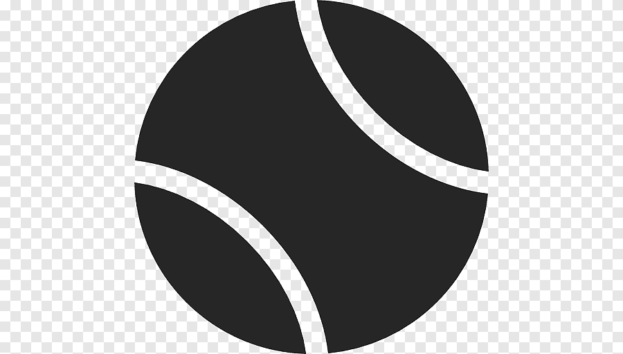

Raquetas de tenis
12/11/2021
Contexto
la tecnologia en las Raquetas, las raquetas del tenis han avanzado en todsas estas decadas haciednolas cada ves mas aerodinamicas esto hace que a la hora que tu ocupes una raqueta sea mas facil pegarle a la pelota y haciendo que tus golpes sean mas fuertes antes las raquetas eran de madera entonces era mas dificil darle efecto a la pelota hoy en dia estan echas de otros materilas yo que juego tenis tengo una raqueta llamada babolat esta es una marca de raqueta muy reconocida por la exelente calidad de la raqueta esto hace que me vaya mejro en torneos o partidos amistosos varios tenistas profesionales ocupan esta mraca de raquetas por lo bien que estan echasla tecnologia en las Raquetas, las raquetas del tenis han avanzado en todsas estas decadas haciednolas cada ves mas aerodinamicas esto hace que a la hora que tu ocupes una raqueta sea mas facil pegarle a la pelota y haciendo que tus golpes sean mas fuertes antes las raquetas eran de madera entonces era mas dificil darle efecto a la pelota hoy en dia estan echas de otros materilas yo que juego tenis tengo una raqueta llamada babolat esta es una marca de raqueta muy reconocida por la exelente calidad de la raqueta esto hace que me vaya mejro en torneos o partidos amistosos varios tenistas profesionales ocupan esta mraca de raquetas por lo bien que estan echas
Desarrollo
Deporte que se practica entre dos jugadores o dos parejas en una pista rectangular dividida transversalmente por una red; consiste en impulsar una pelota con una raqueta por encima de la red intentando que bote en el campo contrario y que el adversario no la pueda devolver; los partidos se disputan a tres o cinco sets siguiendo un complejo sistema de puntuación.
El tenis, también llamado tenis de campo, es un deporte de raqueta practicado sobre una pista rectangular, delimitada por líneas y dividida por una red.Se disputa entre dos jugadores o entre dos parejas.
Motivacion
Mi motivacion para realizar este blog es mi gusto por el tenis y la tecnologia de las raquetas.
.jfif)

 Tenis
Tenis